Inventory Automation
target: a small private school's supply & property office (fictional demo data in the simulation)
input: the problem
Supply requests ran on paper slips and chat messages. Approvals left no trail, the stock card and the shelf disagreed, and the same last box of supplies could be promised to two teachers in one morning. When stock ran out, buying happened first and the paperwork — if any — came later.
output: the system
An 11-workflow n8n suite with Google Sheets as the state machine: a Google Form takes requests of up to 15 items per basket, the requester confirms on Messenger, two approval levels decide — with the School Head's decision final on every request — stock is reserved by formula so it can't be double-allocated, shortfalls become restock requests, and PO drafts are grouped by supplier for the School Head to approve or edit.
Request Intake
Validates each basket once — requester, items, quantities, duplicate guard, department assignment — merges duplicate items and stamps the approval path at intake.
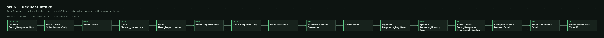
full size ↗Messenger Webhook Router
The Messenger front door: registration, confirmation referrals, approval taps, and custodian prepare/receive taps — every event signature-verified.
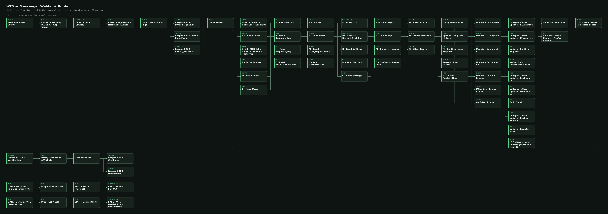
full size ↗Email Approval Links
Receives the signed email-link clicks: approve-all, the decline form, and the “Approve with changes” page. A bare click never decides — status is re-checked first.
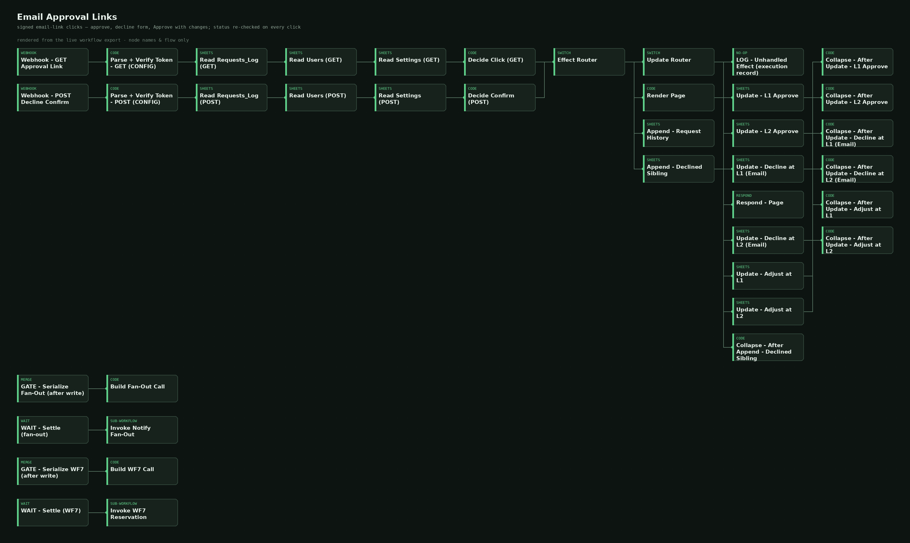
full size ↗Notify Fan-Out
The single notification composer: basket item lines with an availability snapshot, Messenger buttons, and signed email links — and it stands down when a call is stale.
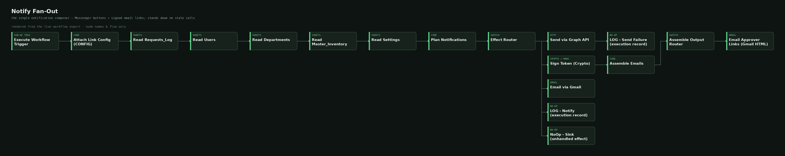
full size ↗Availability, Reservation & Restock
The stock engine. Fires only after School Head final approval: full reservation, partial plus a shortfall child request, or none — verified after every write.
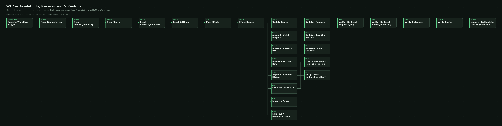
full size ↗Pickup & Completion
Prepared → Ready for Pickup → Received. Receipt appends exactly one Issue transaction; a second receipt appends nothing. The requester gets a plain confirmation — the operational line goes to custodians.
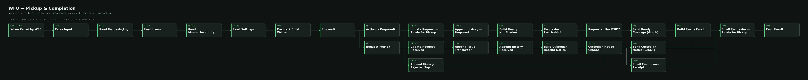
full size ↗Real-Time Sync
The only writer of stock-on-hand. Applies each ledger transaction exactly once; an Issue row closes its request, a Restock row triggers the restock sweep.
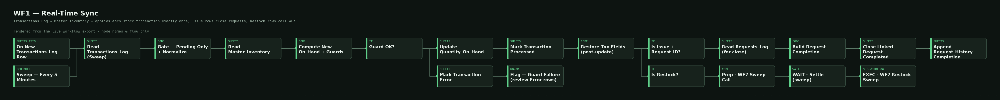
full size ↗Daily Digest & Reminders
The backstop: a 09:00 digest re-sends every still-pending basket with its own buttons, plus confirm/pickup reminders, Day-7 reassignment and Day-8 release of uncollected stock.
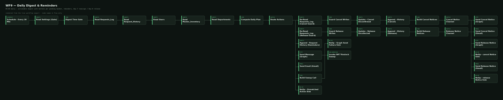
full size ↗PO Drafts
Groups custodian-approved restock rows by supplier into purchase-order drafts and emails them to the School Heads. Approve stamps the draft; the edit page cuts quantities, and cut lines return to the pool.
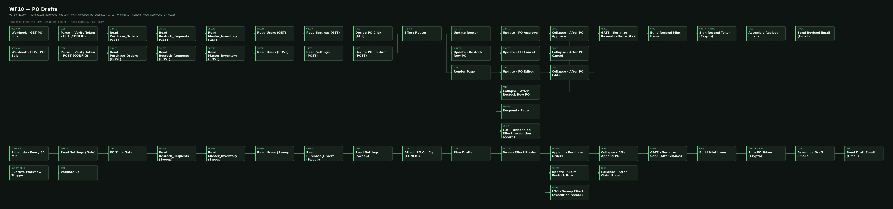
full size ↗Low-Stock Alert Engine
Daily 08:00 scan: SKUs at or below reorder level with no open restock row get one — and custodians get the email. A second run creates zero duplicates.
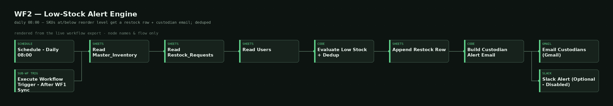
full size ↗Metric Maintenance
Sunday 00:05 weekly integrity checks over the workbook, with the Dashboard refresh stamp — the quiet auditor of the suite.
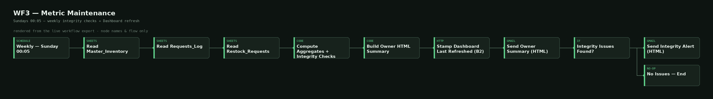
full size ↗System overview diagram ↗ — 11 workflows around one Google Sheets workbook. The sheet, not the chat thread, is the source of truth: every handler re-reads the request's live status before it acts.
architecture
- Sheets are the state machine — each request row carries a 12-status lifecycle, and every button tap, link click, and typed command re-reads that live status before acting. Double-taps and stale clicks can't double-decide.
- Reservation by formula, never by counter — Reserved is a SUMIFS over the request log and Available = On Hand − Reserved, so two approvals can never promise the same last units. Stock deducts exactly once — when the requester confirms receipt — through the transaction ledger.
- Two levels, one final say — the Faculty Head endorses at L1; the School Head's decision is final on every request. Approvers can also “Approve with changes”: cut an item's quantity and the cut portion splits off as a declined sibling row with a reason, so the paperwork always sums to the original ask.
- Buttons everywhere, first decision wins — Messenger postbacks plus per-approver signed email links that expire in 7 days and re-check status on click. Email is the guaranteed channel when a Messenger window has closed; the daily digest re-sends anything still pending.
- Shortfalls become purchase orders — a partial reservation spawns a child request and a restock row; custodian-approved rows are pooled by supplier into PO drafts. PO-2026-00001 (₱1,080, 2 lines) was approved live by the School Head; PO-2026-00002 (₱1,100) was drafted in the same sweep. The system drafts and tracks POs — sending one to a supplier stays a human step.
- Proven on live traffic, not just in tests — the first multi-item basket ran the whole chain end-to-end: form → Messenger confirm → L1/L2 approvals with quantity cuts → reservation → prepared → received → restock → custodian approval → PO draft → School Head PO approval. An edge-case suite then passed 101 offline checks and 21/21 independent reviewer probes with zero defects.
tech stack
 n8n
n8n Google Sheets
Google Sheets
Plus Google Forms + Apps Script (intake), Meta Messenger (approvals & confirmations), and Gmail (signed approval links, digests, PO drafts).
▶ Try the Interactive Simulation
// the simulation runs 100% in your browser with fictional data — it is not connected to any live system
// scope: 11 n8n workflows + a bound Apps Script form sync · deployed and verified live end-to-end, integrated 2026-10-14 · demo dataset (Northgate Academy, fictional): 45 SKUs · ₱335,915 stock value · 14 users · 7 departments · baskets up to 15 items · unconfirmed requests auto-cancel at 72h; uncollected reservations release on Day 8 · still open before real-staff rollout: Meta App Review (Business Verification + privacy policy) so non-role staff can use Messenger — approvals by signed email link already work for everyone